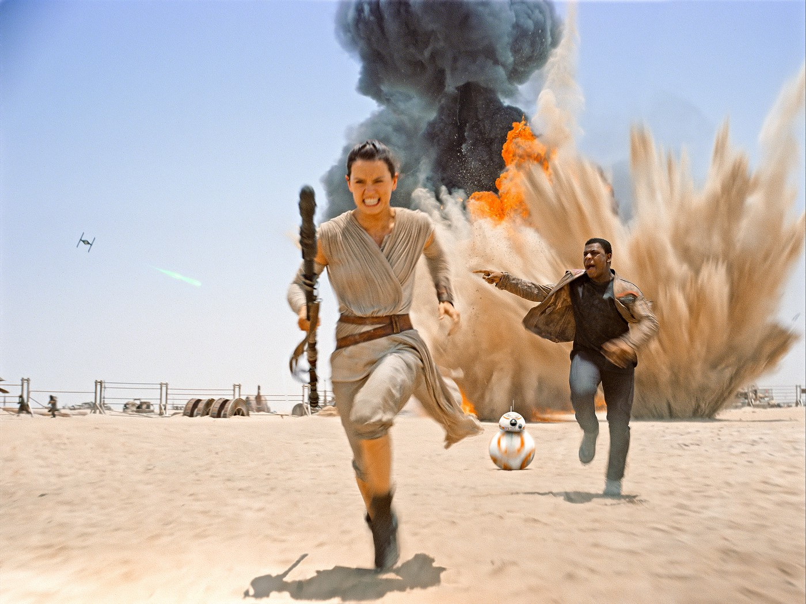

Anos depois, um Stormtrooper chamado Finn deserta da Primeira Ordem e acaba caindo em Jakku, onde conhece Rey.
Ambos passam a ser perseguidos pelo exército e fogem na Millenium Falcon, que acaba sendo interceptada por Han
Solo e Chewbacca. Eles acabam encontrando A Resistência e descobrem que Rey tem uma relação misteriosa com a
Força.
A Primeira Ordem constrói a base Starkiller, uma espécie de nova Estrela da Morte. Com essa arma, ela destrói
o sistema onde se encontra o Senado da Nova República. A Resistência se une para destruir essa monstruosidade.
No meio do caminho, Kylo Ren mata o próprio pai e fere fatalmente Finn. Rey assume o sabre de luz que pertencia
a Luke e enfrenta o vilão, derrotando-o. A base é destruída e a aprendiz de Jedi vai em busca de Luke para iniciar
seu treinamento.
